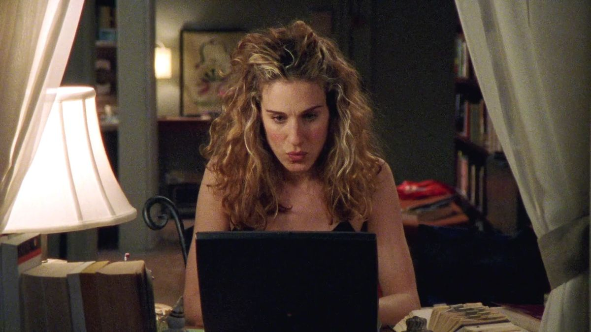
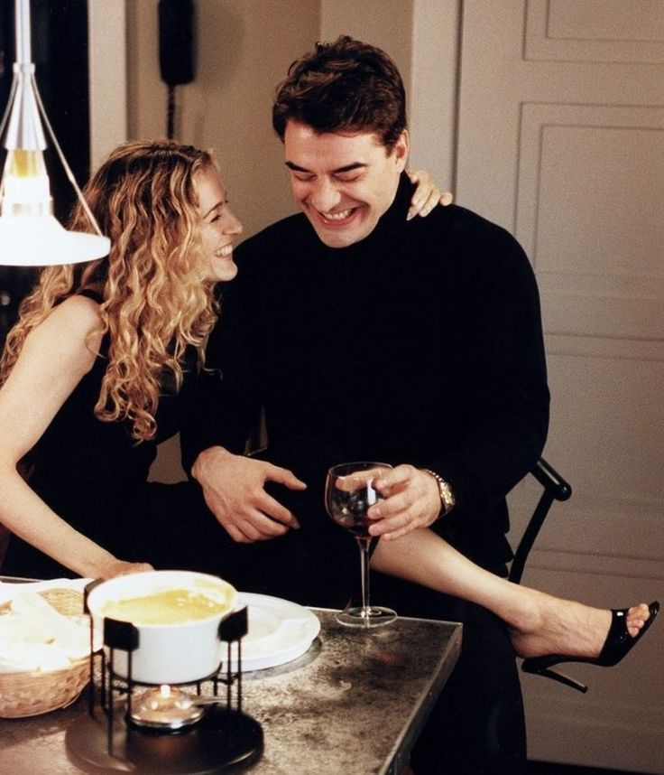
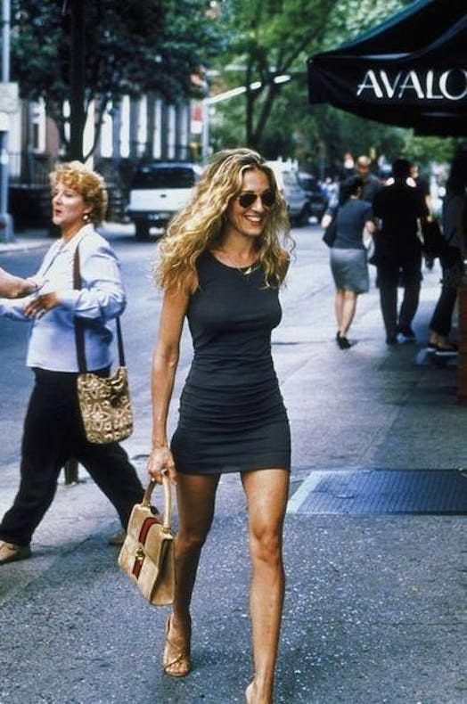

carrie bradshaw
Toca el nombre

Carrie escribe una columna sobre las relaciones en Nueva York, y sin darse cuenta termina escribiendo también sobre su propia vida. Es la narradora de la serie: cada episodio arranca con una pregunta que ella se plantea frente a su computadora.
Es conocida por su estilo, sobre todo por su amor a los zapatos y por su historia con Mr. Big, una de las relaciones más recordadas de la serie.


